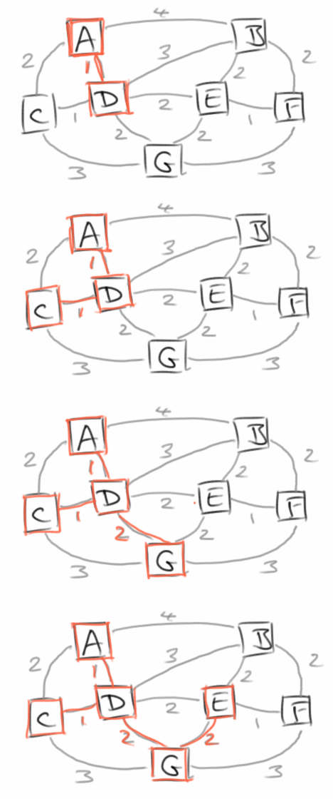

Graphs
Graphen sind überall, sie sind sogar noch weiter verbreitet als Bäume. Sie sind auch viel nützlicher. Vieles was zunächst wie ein Baum aussieht ist in Wirklichkeit ein Graph. Z.B. der klassische Familien-Stammbaum, ist in der Regel ein Graph. Genauso verhält es sich bei den meisten Spielebäumen (z.B. Tic-Tac-Toe), oder auch dem Pascaldreieck, das zwar wie ein Baum aussieht aber ein Graph ist. Auch Mazes sind häufig keine Bäume, sondern Graphen.
Bei den Algorithmen die mit Graphen zu tun haben, geht es meistens darum den kürzesten Pfad zu finden, oder herauszufinden ob ein Graph verbunden ist oder Kreise enthält. Aber auch für die Planung eines Straßennetzwerkes gibt es Graphalgorithmen. Ganz wichtig sind Graphen auch bei der Planung von Projekten.
.
Examples
Der Klassiker unter den Graphenanwendungen ist Google Maps. Aber egal ob Auto, Zug oder Flugzeug immer wenn man wissen möchte ob es einen Weg von A nach B gibt, oder was der kürzeste Weg von A nach B ist, dann verwendet man Graphenalgorithmen. Die Züge eines Spiel, wie z.B. Tic-Tac-Toe, stellen bei genauem Betrachten eine Graphstruktur und nicht eine Baumstruktur dar.
|
|
|
 |
Weitere Beispiele für Graphen sind:
- Freundesnetzwerke oder Beziehungen zwischen Menschen im Allgemeinen
- das Internet und all seine Webseiten
- Computer Netzwerke
- elektrische Schaltkreise
- Transport Netzwerke
- Planung von Tasks
- Klassendiagramme
- Workflows
Es gibt noch unzählige andere Beispiele. Übrigens, alle Bäume sind auch Graphen, aber ein Graph ist nicht notwendigerweise auch ein Baum.
.
 Pirate Island
Pirate Island
Zur Einführung in Graphen betrachten wir eine Inselgruppe in der Karibik, bestehend aus den drei Inseln: Pirate Island, Treasure Island und Island of Death [1]. Die Inseln bezeichnen wir als Vertices. Zwischen den Inseln kann man mit Booten hin- und manchmal auch wieder zurückfahren. Diese Verbindungsstrecken nennen wir Edges. Edges können eine Richtung haben, also man kann nur in eine Richtung fahren, oder sie haben keine Richtung. Das Ganze, also die Liste aller Vertices und Edges nennt man einen Graphen.
.
Definitions
Auch was Graphen angeht, macht es Sinn sich erst einmal einen Wortschatz zuzulegen. Ein Graph besteht also aus Vertices und Edges.
- Ein Vertex ist ein Knoten in dem man Information speichern kann.
- Ein Edge verbindet immer zwei Vertices. Auch im Edge kann man Information speichern. Ein Edge kann gerichtet sein (directed), oder die Richtung ist egal (undirected).
Wenn wir z.B. Flughäfen mit ihren Verbindungsflügen betrachten, dann sind die Flughäfen die Vertices, und die Information die wir in den Vertices speichern ist der Name des jeweilgen Flughafens. Die Edges hingegen sind die Verbindungen die zwischen den Flughäfen existieren. Die Information die wir in den Edges speichern würden wäre dann die Entfernung zwischen den jeweilgen Flughäfen die durch dieses Edge verbunden werden.
.
Terminology
Wenn man allgemein von Graphen spricht, dann benutzt man Großbuchstaben aus dem Ende des Alphabets, wie U, V, W, usw. für Vertices und Kleinbuchstaben vom Anfang des Alphabets, wie a, b, c, usw. für Edges. Wenn wir den Graphen rechts betrachten, dann sagt man:
- U und V sind die "End-Vertices" des Edge a;
- a, b, und g sind "incident" auf V;
- U und V sind "adjacent", also benachbart;
- der Vertex W hat "degree" 4, weil er vier Edges hat;
- die Edges c und d sind "parallel";
- das Edge h ist ein "self-loop".
Durch einen Graph gibt es Pfade. Ein Pfad beginnt bei einem Anfangs-Vertex und endet bei einem End-Vertex:
P1 = (U,f,X,g,V,b,W)
dabei muss zwischen zwei Vertices immer ein Edge liegen, bestehen also abwechselnd aus Vertices und Edges.
Besondere Pfade sind Ringe (cycles): Ringe sind Pfade bei denen Anfangs- und End-Vertex gleich sind:
C1 = (U,f,X,g,V,a,U)
Ringe können problematisch sein, speziell für Navigationssysteme: sie führen u.U. dazu dass man immer im Kreis fährt ohne je an sein Ziel zu kommen. Auch für Datenpakete im Internet sind Ringe ein Problem.
Wenn wir von einem Subgraphen eines Graphen G sprechen, dann enthält dieser eine Untermenge der Vertices und Edges von G. Ein Spezialfall ist der Spanning Subgraph: dieser enthält alle Vertices von G, nicht notwendigerweise aber auch alle Edges.
Wir nennen einen Graphen connected (verbunden), wenn es einen Pfad zwischen allen Vertices gibt.
Kommen wir zu den Bäumen (Trees): ein Baum ist eine Graph der connected (verbunden) ist, und der keine Ringe (Cycle) enthält. Bei einem Forrest (Wald) handelt es sich um einen Graphen der aus mehreren Bäumen besteht. Was uns schließlich zu einem ganz wichtigen Graphen führt, dem Spanning Tree: dabei handelt es sich um einen Spanning Subgraph der ein Baum ist.
|
|
|

.
Graph ADT
Graphen funktionieren etwas anders als Bäume. Während die Klasse Tree nicht viel mehr als ein Wrapper für den Wurzelknoten war, wird bei den Graphen die Hauptarbeit in der Klasse Graph selbst erledigt. Wir beschränken uns erst einmal auf ungerichtete Graphen. Um mit Graphen bequem arbeiten zu können, benötigen wir die folgenden Methoden zum Auflisten aller Edges und Vertices:
- edges(): gibt uns alle Edges als Liste;
- vertices(): gibt uns alle Vertices als Liste.
Zum Navigieren:
- incidentEdges(Vertex<V> vertex): gibt eine Liste aller Edges zurück, die mit dem Vertex vertex verbunden sind;
- opposite(Vertex<V> vertex, AbstractEdge<E> edge): gibt den Vertex zurück der über das Edge edge mit dem Vertex vertex verbunden ist;
- endVertices(AbstractEdge<E> edge): gibt die beiden Vertices zurück die über das Edge edge miteinander verbunden sind;
- areAdjacent(Vertex<V> vertex1, Vertex<V> vertex2): gibt true zurück, falls vertex1 und vertex2 direkt miteinander verbunden sind.
Zum Suchen:
- containsVertex(Vertex<V> vertex): stellt fest ob der gegebene Vertex im Graphen ist;
- findVertex(V element): sucht den Vertex, der das gegebene Element enthält;
- containsEdge(AbstractEdge<E> edge): stellt fest ob das gegebene Edge im Graphen ist;
- findEdge(E element): sucht das Edge, das das gegebene Element enthält.
Ganz nützlich sind die folgenden Hilfsmethoden:
- size(): gibt die Anzahl der Vertices im Graphen zurück;
- isTree(): stellt fest ob es sich bei dem Graphen in Wirklichkeit um einen Baum handelt;
- isConnected(): stellt fest ob der Graph verbunden (connected) ist;
- hasCycle(): stellt fest ob der Graph Ringe (Cycles) enthält.
Bzgl. dem Einfügen, Ersetzen und Entfernen gibt es die folgenden Methoden:
- insertVertex(Vertex<V> vertex): fügt einen neuen Vertex in den Graphen ein;
- insertEdge(Vertex<V> v1, Vertex<V> v2, E element): fügt ein neues Edge in den Graphen ein;
- replaceElement(Vertex<V> vertex, V element): ersetzt das Element des Vertex vertex;
- replaceElement(AbstractEdge<E> edge, E element): ersetzt das Element des Edges edge;
- removeVertex(Vertex<V> vertex): entfernt den Vertex aus dem Graphen, entfernt auch alle Edges die mit diesem Vertex verbunden sind;
- removeEdge(AbstractEdge<E> edge): entfernt das Edge aus dem Graphen, die Vertices bleiben aber im Graphen.
Ausserdem gibt es noch eine handvoll Traversal-Methoden, dazu weiter unten mehr.
Das ist jetzt ein bischen viel auf einmal, deswegen sehen wir uns mal ein einfaches Beispiel an, wie man einen Graphen anlegt und verwendet:
GraphEdgeList<Integer, String> graph = new GraphEdgeList<Integer, String>();
Vertex<String> v1 = graph.insertVertex(new Vertex<String>("NUE"));
Vertex<String> v2 = graph.insertVertex(new Vertex<String>("AMS"));
Vertex<String> v3 = graph.insertVertex(new Vertex<String>("MAD"));
AbstractEdge<Integer> e1 = graph.insertEdge(v1, v2, 542);
AbstractEdge<Integer> e2 = graph.insertEdge(v2, v3, 1462);
AbstractEdge<Integer> e3 = graph.insertEdge(v1, v3, 1524);
System.out.println("Size: " + graph.size());
System.out.println("isConnected: " + graph.isConnected());
System.out.println("isTree: " + graph.isTree());
System.out.println("hasCycle: " + graph.hasCycle());
.
Wenn wir jetzt z.B. wissen wollten was die Entfernung zwischen dem Nürnberger Flughafen und dem Madrid Barajas International Airport ist, dann suchen wir erst einmal nach dem Nürnberger und Madrider Flughafen:
Vertex<String> v1 = graph.findVertex("NUE");
Vertex<String> v2 = graph.findVertex("MAD");
Collection<AbstractEdge<Integer>> connections = graph.incidentEdges(v1);
for (AbstractEdge<Integer> edge : connections) {
Vertex<String> v3 = graph.opposite(v1, edge);
if (v2 == v3) {
println("Distance: "+edge.getElement());
}
}
Danach müssen wir nach der Verbindungsstrecke (Edge) zwischen den beiden suchen. Das geht leider nicht direkt, aber wir können uns mal alle Verbindungen die von und nach Nürnberg gehen geben lassen, also connections. Dann iterierten wir einfach durch alle Verbindungen bis wir die finden an deren anderen Ende Madrid ist. Das war's.
.
Depth-First Search Traversal
Was die Iterationsmethoden angeht, sind die Tiefensuche (depth-first search, DFS) und die Breitensuche (breadth-first search, BFS) die wichtigsten. Beide durchsuchen den gesamten Graphen, besuchen alle Vertices und Edges, und können feststellen ob der Graph zusammenhängend (connected) ist. Man kann mit ihnen auch feststellen ob ein Graph Kreise enthält.
Die Tiefensuche markiert zunächste alle Vertices und Edges als "UNEXPLORED". Dann beginnt es mit einem beliebigen Vertex, markiert diesen als "VISITED" und folgt dann einem der Edges zum nächste Vertex. Dabei wird der neue Vertex mit "VISITED" markiert und das Edge mit "DISCOVERY". Dies wird dann rekursiv wiederholt. Sollte es passieren, dass wir unterwegs auf einen Vertex stoßen den wir schon einmal besucht haben, dann wird das Edge mit "BACK" markiert. Sobald es ein Edge gibt, das mit "BACK" markiert wurde, wissen wir, dass unser Graph Kreise enthält. Sollten wir im ersten Durchlauf alle Vertices besucht haben, dann wissen wir auch, dass der Graph zusammenhängend ist. Sollte es aber noch Vertices geben, die wir noch nicht besucht haben, müssen wir die natürlich auch noch besuchen.
Man kann diesen Algorithmus auch in sogenannten Pseudo-Code beschreiben, das macht es in der Regel einfacher die Übersicht zu behalten.
dfs(G) {
for ( v in G.vertices() )
setLabel( v, UNEXPLORED );
for ( e in G.edges() )
setLabel( e, UNEXPLORED );
for ( v in G.vertices() )
if ( getLabel( v == UNEXPLORED ) )
dfs( G, v );
}
Wobei der rekurisve Teil wie folgt aussieht:
dfs(G, v) {
setLabel( v, VISITED )
for ( e in G.incidentEdges( v ) ) {
if ( getLabel( e ) == UNEXPLORED ) {
w = opposite( v, e );
if ( getLabel( w ) == UNEXPLORED ) {
setLabel( e, DISCOVERY );
DFS( G, w );
} else {
setLabel( e, BACK );
}
}
}
}
Der Algorithmus stammt aus dem wunderbaren Buch von Goodrich und Tamassia []. Das Depth-First Search Traversal entspricht dem Pre-Order Traversal bei Bäumen, d.h., er versucht zunächst so tief wie möglich in den Graph hineinzugehen, deswegen auch Tiefensuche.
[] Data Structures and Algorithms in Java, M.T. Goodrich and R. Tamassia
.
Breadth-First Search Traversal
Die Breitensuche geht nicht in die Tiefe sondern die Breite. Auch hier markieren wir zunächste alle Vertices und Edges als "UNEXPLORED". Dann beginnen wir wieder mit einem beliebigen Vertex, markieren diesen als "VISITED" und fügen ihn in eine Liste L0 ein. Dann folgen wir allen Edges die von diesem Vertex ausgehen, markiern sie als "VISITED" und fügen diese in eine Liste L1 ein, also alle Vertices die ein Edge vom Ausgangsvertex entfernt sind. Zusätzlich markieren wir alle Edges denen wir gefolgt sind mit "DISCOVERY". Im dritten Schritt, folgen wir allen Edges die von den Vertices aus L1 ausgehen. Alle Vertices die wir auf diese Art erreichen sammeln wir in der Liste L2. L2 enthält also alle Vertices die zwei Edges vom Ausgangsvertex entfernt sind. Wir markieren auch wieder alle Edges mit "DISCOVERY", es sei denn sie führen zurück auf einen Vertex den wir bereits besucht haben, den markieren wir dann mit "CROSS". Das machen wir solange weiter, bis es nichts mehr zu entdecken gibt. Sollte es danach noch Vertices geben, die wir noch nicht besucht haben, müssen wir die natürlich auch noch besuchen.
Sollte es ein Edge mit "CROSS" geben, dann wissen wir wieder, dass unser Graph Kreise enthält. Auch hier gilt wieder, sollten wir im ersten Durchlauf nicht alle Vertices erreicht haben, dann ist der Graph nicht zusammenhängend.
Im Pseudo-Code sieht das dann so aus: erst markieren wir wieder alle Knoten und Edges:
bfs(G) {
for ( v in G.vertices() )
setLabel( v, UNEXPLORED );
for ( e in G.edges() )
setLabel( e, UNEXPLORED );
for ( v in G.vertices() )
if ( getLabel( v == UNEXPLORED ) )
bfs( G, v );
}
Und dann gehen wir alle durch,
bfs(G, s) {
L_0 = new sequence;
L_0.insertLast( s );
setLabel( s, VISITED );
i = 0;
while ( !L_i.isEmpty() )
L_i+1 = new sequence;
for ( v in L_i.elements() ) {
for ( e in G.incidentEdges( v ) ) {
if ( getLabel( e ) == UNEXPLORED ) {
w = opposite( v, e );
if ( getLabel( w ) == UNEXPLORED ) {
setLabel( e, DISCOVERY );
setLabel( w, VISITED );
L_i+1.insertLast( w );
} else {
setLabel( e, CROSS );
}
}
}
}
i++;
}
}
Auch dieser Algorithmus stammt aus dem wunderbaren Buch von Goodrich und Tamassia [2]. Der BFS Traversal Algorithmus entspricht dem Level-Order Traversal bei Bäumen. U.a. kann man mit ihm auch die Verbindung mit den wenigsten Edges zwischen zwei Knoten finden. Das muss aber lange nicht die kürzeste Verbindung sein.
.
Dijkstra
Kommen wir zur wichtigsten Anwendung von Graphen: wie komme ich am schnellsten von A nach B, also das typische Google Maps Problem. Aber auch die Datenpakete die im Internet unterwegs sind, sollten idealerweise auf dem kürzesten (oder schnellsten) Weg vom Server zum Browser geschickt werden.
Der bekannteste Algorithmus der das Problem des kürzesten Pfades (shortest path) effektiv löst stammt von Edsger Dijkstra [3]. Der Algorithmus geht davon aus, dass unser Graph zusammenhängend (connected) und ungerichtet (undirected) ist, und außerdem keine negativen Distanzen (weights) enthält. Es ist ein Greedy Algorithmus, der die Breitensuche (BFS) benutzt.
Wir beginnen beim Ausgangsvertex A, von dem wir unsere Reise beginnen möchten. Wir markieren alle Vertices mit der Distanz Unendlich, außer A, der wird mit der Distanz 0 markiert. Dann beginnen wir mit der Breitensuche und markieren alle Vertices die wir von A aus direkt erreichen können mit der Distanz die sie zu A haben. Jetzt kommt die Greedyness: wir machen mit dem Vertex V weiter, der die kürzeste Distanz zu A hat. Jetzt suchen wir nach allen Vertices die wir von diesem neuen Vertex V aus direkt erreichen können. Auch hier markieren wir wieder die Distanzen, allerdings die Distanz zum Ausgangsvertex A, nicht die zum neuen Vertex V. Hier gibt es zwei Alternativen: der Vertex ist noch mit Unendlich markiert, dann markieren wir ihn einfach mit der neuen Distanz zu A. Oder der Vertex war bereits markiert, da wir ihn schon in einem vorherigen Schritt erreicht haben. Dann markieren wir ihn nur dann neu, wenn die neue Distanz kürzer ist als die alte. Das wiederholen wir dann solange, bis wir alle Vertices im Graphen erreicht haben. Jeder Vertex ist jetzt mit der kürzesten Distanz zum Ausgangsvertex A markiert. Wenn wir uns noch zusätzlich merken, wer der Vorgängervertex war (prev) mit dem wir die letzte Änderung der Distanz vorgenommen haben, dann können wir auch den Pfad ausgeben, wie wir auf dem kürzesten Pfad von A nach B kommen.
In der Wikipedia findet man den Algorithmus auch als Pseudocode [4]:
dijkstra(Graph, source): dist[source] ← 0 create vertex set Q for each vertex v in Graph: if v ≠ source dist[v] ← INFINITY prev[v] ← UNDEFINED Q.add_with_priority(v, dist[v]) while Q is not empty: u ← Q.extract_min() for each neighbor v of u: alt ← dist[u] + length(u, v) if alt < dist[v] dist[v] ← alt prev[v] ← u Q.decrease_priority(v, alt) return dist[], prev[]
Vom Laufzeitverhalten her ist der Dijkstra AIgorithmus gar nicht so schlecht: O( (n+m)*log(n) ). Der A* Algorithmus [5] ist eine Erweiterung des Dijkstra AIgorithmus, die ein bischen komplizierter ist, aber dafür auch schneller. Viele Spiele verwenden deswegen den A* Algorithmus anstelle von Dijkstra's.
Es gibt auch andere Algorithmen um den kürzesten Pfad zu bestimmen, bekannte sind:
- Bellman-Ford: erlaubt auch negative Distanzen (weights) und läuft in O(n*m).
- DAG-basierte Algorithmen: funktioneren nur für gerichtete Graphen ohne Ringe, DAGs erlauben auch negative Distanzen (weights) und haben ein Laufzeitverhalten von O(n+m), sind also viel schneller als Dijkstra.
.
Minimum Spanning Tree
Kommen wir zur zweiten wichtigen Anwendung für Graphen: dem Minimum Spanning Tree. Erinnern wir uns an unsere Definitionen: ein Spanning Tree ist ein Spanning Subgraph der ein Baum ist. Der Minimum Spanning Tree ist der Spanning Tree mit der niedrigsten Gesamt-Gewichtung (total weight). Minimum Spanning Trees sind deswegen so wichig, weil sie uns helfen Geld zu sparen. Z.B. möchten wir bei der Planung von Straßen zwei Kriterien erfüllt sehen: zum Einen soll es zu jedem Dorf und jeder Stadt mindestens eine Straße geben. Zum Anderen möchte man aber auch Kosten sparen, also keine unnötigen Straßen bauen. Das Gleiche gilt auch für das Schienennetz. Oder wenn wir elektrische Leitungen verlegen, dann soll natürlich jedes Gerät mit Strom versorgt werden, aber Kabel kosten Geld, deswegen wollen wir es eigentlich vermeiden unnötige Kabel zu verlegen. Das Gleiche gilt auch für die Verlegung von Wasserrohren oder Glasfaserkabel.
.
Prim
Das Problem lässt sich mit zwei bekannten Algorithmen lösen, dem von Prim und dem von Kruskal. In Prim's Algorithmus initialisieren wir zunächst eine Priorityqueue Q mit allen Vertices unseres Graphen, dabei markieren wir aber alle Vertices wieder mit Unendlich, außer unserem zufälligen Startvertex r. Die Priorityqueue verwendet die Distanz als Sortierkriterium. Dann beginnen wir damit aus der Priorityqueue uns das Element u mit der höchsten Priorität zu geben. Beim ersten mal ist das unser Startvertex r. Dann lassen wir uns alle Vertices geben, die man von u aus erreichen kann. Für all diese Vertices berechnen wir die Markierungen (Distanzen) zu u, aber nur wenn diese noch in Q sind. Danach nehmen wir das nächste Element aus der Priorityqueue und wiederholen den Prozess solange bis die Queue leer ist.
In der Wikipedia findet man den Algorithmus als Pseudocode [6,7]:
prim(G, r) Q: priority queue for ( v in G.vertices() ) Q <- v for ( u in Q) ) dist[u] <- ∞ prev[u] <- null wert[r] <- 0 while ( !Q.isEmpty() ) u <- extract_min(Q) for ( all v ∈ neighbor(u) ) if ( v ∈ Q && weight(u,v) < dist[v] ) prev[v] <- u dist[v] <- weight(u,v)
dabei ist weight() die Gewichtsfunktion für die Kantenlänge.
.
Kruskal
Kruskal's Algorithmus ist ein wunderbares Beispiel dafür, wie man einen eigentlich nicht ganz trivialen Algorithmus unter zuhilfenahme einer geschickt gewählten Datenstruktur ganz einfach erscheinen lassen kann. Besagte Datenstruktur ist in diesem Fall das Disjoint-Set (auf gut deutsch Union-Find-Datenstruktur) [9]. Das Disjoint-Set ist ein Set so wie wir es aus Kapitel 3 kennen, aber mit der Eigenschaft, dass es seine Unter-Sets mit verwaltet und zwar derart, das jedes Element in nur einem dieser Unter-Sets sein kann, aber auch jedes Element in einem Unter-Set sein muss. Diese Datenstruktur erlaubt es nun einmal mittels find() das Unter-Set zu finden dem ein bestimmtes Element angehört, und mittels union() zwei Unter-Sets zu vereinen.
Kruskal's Algorithmus beginnt dann damit, dass er ein Disjoint-Set initialisiert, und jedes Element für sich erst einmal ein Unter-Set bildet. Wir initialisieren auch ein Minimum Spanning Tree Set, A. Das soll später alle Edges des Minimum Spanning Trees enthalten. Dann gehen wir durch alle Edges des Graphen, sortiert nach Distanz aufsteigend. Das macht man am einfachsten wieder mit einer Priorityqueue. Für die beiden Vertices u und v die zu dem jeweiligen Edge gehören lassen wir uns die jeweiligen Disjoint-Sets mittels find() geben. Sind diese beiden Disjoint-Sets verschieden, dann vereinigen wir diese mittels union() und fügen das Edge zu unserem Minimum Spanning Tree Set, A, hinzu. Das machen wir solange bis wir alle Edges durch sind.
Die Wikipedia enthält auch eine sehr schöne Erklärung des Kruskal Algorithmus und wie üblich findet man dort auch Pseudocode [8]:
kruskal(G)
A = ∅ // set of edges
foreach v ∈ G.V:
MAKE-SET(v)
foreach (u, v) in G.E ordered by weight(u, v), increasing:
if FIND-SET(u) ≠ FIND-SET(v):
A = A ∪ {(u, v)}
UNION(u, v)
return A
Sieht doch gar nicht so kompliziert aus.
.
Directed Graphs (Digraph)
Gerichtete Graphen, auch Digraphs genannt, sind normale Graphen bei denen die Edges eine Richtung haben. Das wird graphisch meist durch einen Pfeil dargestellt. Digraphs haben zahlreiche Anwendungen. Z.B. die Links im Internet stellen einen gerichteten Graphen dar. Auch Flüge sind gerichtete Graphen. Es ist nicht selten, dass es einen Flug von A nach B gibt, aber es gibt keinen direkten Rückflug. Natürlich stellen auch Einbahnstraßen einen gerichteten Graphen dar. Im Prinzip kann jeder ungerichtete Graph in einen Digraph umgewandelt werden, indem man jedes ungerichtete Edge durch zwei gerichtete ersetzt, eines in die Hin- und eines in die Zurückrichtung.
Gerichtete Graphen haben alle Methoden eines normalen Graphen, zusätzlich gibt es aber noch folgende:
- incomingEdges(Vertex<V> vertex): gibt eine Liste aller Edges zurück, die mit dem Vertex vertex verbunden sind und deren Richtung auf den Vertex hin deutet;
- outgoingEdges(Vertex<V> vertex): gibt eine Liste aller Edges zurück, die mit dem Vertex vertex verbunden sind und deren Richtung von dem Vertex weg deutet.
Verwendet wird der Digraph ganz genauso wie der Graph. Wir implementieren das Pirate Island Beispiel:
DiGraphEdgeList<String, String> graph = new DiGraphEdgeList<String, String>();
Vertex<String> v1 = graph.insertVertex(new Vertex<String>("Pirate Island"));
Vertex<String> v2 = graph.insertVertex(new Vertex<String>("Island of Death"));
Vertex<String> v3 = graph.insertVertex(new Vertex<String>("Treasure Island"));
AbstractEdge<String> e1 = graph.insertEdge(v1, v2, "");
AbstractEdge<String> e2 = graph.insertEdge(v1, v3, "");
AbstractEdge<String> e3 = graph.insertEdge(v3, v1, "");
Auch nicht allzu kompliziert.
Die Traversal-Methoden verhalten sich ein bischen anders für Digraphs. Es gibt sowohl ein gerichtetes DFS als auch ein gerichtetes BFS Traversal. Den Unterschied zu den normalen Traversal Methoden kann man sehr schön am Pirate Island Beispiel sehen: beginnt man seine Reise von Treasure Island, so kann man alle Inseln erreichen. Beginnt man allerdings im Island of Death, dann ist das nicht der Fall. Deswegen gibt es für gerichtete Graphen das Konzept der Reachability, also der Erreichbarkeit. Ein Digraph ist strongly connected, wenn von jedem Vertex aus jeder andere Vertex erreicht werden kann.
.
Directed Acyclic Graphs (DAG)
Eine ganz besondere Form der Digraphen sind die azyklischen: also gerichtete Graphen, die keine gerichteten Kreise enthalten. DAGs tauchen in sehr vielen interessanten Problemen auf [10], wie z.B. wenn wir in Java in einem Klassendiagramm Vererbungen darstellen, dann handelt es sich um einen DAG. Oder wenn wir die Abhängigkeiten von Vorlesungen betrachten, also man sollte erst Programmieren 1 gehört haben, bevor man Programmieren 2 hören kann, dann ist das auch wieder ein DAG. Die wichtigste Anwendung von DAGs sind allerdings Scheduling Constraints, wie sie z.B. im Projektmanagement auftreten.
Bei solchen Scheduling Constraints gibt es Abhängigkeiten. Z.B. können wir erst dann ein Bild aufhängen wenn wir vorher die Nägel gekauft haben, mit denen wir das Bild aufhängen wollen. Also ein Task hängt von einem anderen Task ab. Bei vielen Tasks, kann das etwas unübersichtlich werden. Um dann festzustellen, mit welchem Task man anfangen sollte, und in welcher Reihenfolge man die Tasks am effektivsten abarbeiten sollte, bedient man sich der Topologischen Sortierung.
.
Topological Sort
Topologische Sortierung hat damit zu tun, dass es einen Unterschied macht ob wir unsere Wäsche erst in die Waschmaschine und dann in den Trockner stecken oder umgekehrt. Im ersten Fall nämlich ist unsere Wäsche sauber und trocken, im zweiten Fall ist sie zwar auch sauber, aber nass. D.h. in unserem Graphen wollen wir sicher stellen, dass die Waschmaschine vor dem Trockner drankommt.
Es gibt mehrere Verfahren eine Topologische Sortierung durchzuführen. Die Resultate sind nicht immer die gleichen, da Topologische Sortierung nicht ganz eindeutig ist. Ein bekannter Algorithmus ist der von Kahn, den man in der Wikipedia als Pseudocode findet [11]:
L ← Empty list that will contain the sorted elements S ← Set of all nodes with no incoming edges while S is non-empty do remove a node n from S add n to tail of L for each node m with an edge e from n to m do remove edge e from the graph if m has no other incoming edges then insert m into S if graph has edges then return error (graph has at least one cycle) else return L (a topologically sorted order)
In den Projekten werden wir uns einige Beispiele ansehen.
.
Review
Nach einigen Definitionen zu Graphen und deren Vertices und Edges, haben wir von gerichteten und ungerichteten Graphen gehört. Bzgl. Iterationsmöglichkeiten haben wir von der Tiefensuche (DFS) und der Breitensuche (BFS) gehört. Wir haben uns auch mit den Algorithmen zu Suche nach dem kürzesten Pfad (Dijkstra) und dem Minimum Spanning Tree (Prim und Kruskal) beschäftigt, und zum Schluss haben wir etwas von der topologischen Sortierung gehört.
.
Projekte
Die Projekte in diesem Kapitel haben es in sich: ob Abenteuerspiel, UBahn- und Flugnavigation, Stadt- und Projektplanung, nichts ist mehr vor uns sicher.
.
Adventure
Im dritten Kapitel haben wir das Adventure Spiel programmiert. Damals haben wir eine Map als Datenstruktur verwendet, genauer eine Map bestehend aus einem String als Key, dem Ausgangsraum, und einer Liste für die Räume, die man von diesem Ausgangsraum erreichen kann:
HashMap<String, ArrayList<String>> roomMap;
Im Prinzip ist nichts gegen diese Datenstruktur zu sagen, man kann das Problem aber auch mit einem Graphen lösen:
DiGraphEdgeList<String, String> diGraph;
Dabei sind die Räume die Vertices,
Vertex<String> v1 = diGraph.insertVertex(new Vertex<String>("kitchen"));
Vertex<String> v2 = diGraph.insertVertex(new Vertex<String>("hallway"));
und Räume werden über Edges miteinander verbunden:
AbstractEdge<String> e1 = diGraph.insertEdge(v1, v2, "");
Möchte man sein Abenteuer beginnen, so sucht man mit
Vertex<String> currentVertex = diGraph.findVertex("kitchen");
nach dem Anfangsvertex. Von diesem lässt man sich dann mittels
Collection<EdgeDirected<String>> outEdgs =
diGraph.outgoingEdges(currentVertex);
die Verbindungsedges auflisten, die von diesem Knoten ausgehen. An den Enden dieser Edges befinden sich die Räume die man darüber erreichen kann:
for (EdgeDirected<String> edge : outEdgs) {
Vertex<String> rm = diGraph.opposite(currentVertex, edge);
...
}
So kann man dann durch den ganzen Graphen navigieren, also ein Abenteuer erleben.
.
Synonyms
Wörter die eine gleiche oder ähnliche Bedeutung haben, nennt man Synonyme. Im Internet finden sich Listen von Synonymen, z.B. der Website WordNet enthält eine Liste mit vielen Synonymen [12-14]. Auch aus Synonymen kann man einen Graphen basteln. Eine Liste von Synonymen sieht z.B. wie folgt aus:
grass, pot pot, cooking vessel vessel, container box, container dish, container bin, container pie, dish plate, dish
Aus diesen Synonymen kann man nun einen ungerichteten Graphen erstellen:
GraphEdgeList<String, String> graph;
durch den man dann wie im Adventure Spiel hindurch navigieren kann. Die Wörter sind die Vertices,
Vertex<String> v1 = diGraph.insertVertex(new Vertex<String>("grass"));
Vertex<String> v2 = diGraph.insertVertex(new Vertex<String>("pot"));
und die Synonymbeziehung wird über die Edges abgebildet:
AbstractEdge<String> e1 = diGraph.insertEdge(v1, v2, "");
Der Rest vom Code ist fast identisch zum Adventure Beispiel. Weiter unten werden wir noch einen visuellen SynonymBrowser erstellen.
.
Traversals
Ein anderes hübsches Beispiel ist es einmal die beiden Traversals für Graphen auszuprobieren und zu visualisieren. Das machen wir mit dem folgende Code:
String str = "A{B{C,D},E{F,G,H},I}";
GraphEdgeList<String, String> graph = new GraphParser().parseTree(str);
graph.bfs(new VisitorInterface<Vertex<String>>() {
int counter = 1;
public void visit(Vertex<?> p) {
((Vertex<String>) p).setElement("" + counter++);
System.out.println(p);
}
});
In diesem Fall ist der Graph ein Baum, und zufälligerweise der gleiche den wir auch im Kapitel zu den Bäumen verwendet haben. Die Zahl in den Rechtecken gibt die Reihenfolge an in der die jeweiligen Knoten besucht wurden, links für DFS-Traversal und rechts für BFS-Traversal:
|
DFS-Traversal |
BFS-Traversal |
|
Was wir sehen ist, dass der DFS dem Pre-Order und der BFS dem Level-Order Traversal für Bäume entspricht.
.
Subway
Ein anderes sehr schönes Beispiel für ein Netzwerk sind UBahnlinien. Z.B. in Nürnberg gibt es drei Linien:
U1: Langwasser Süd, Gemeinschaftshaus, Langwasser Mitte, Scharfreiterring, ... U2: Röthenbach, Hohe Marter, Schweinau, St. Leonhard, Rothenburger Straße, ... U3: Friedrich-Ebert-Platz, Kaulbachplatz, Maxfeld, Rathenauplatz, ...
Auch daraus lässt sich ein Graph erstellen: die Vertices sind die Haltestellen und die Edges stellen die UBahn Linien dar, also U1, U2 oder U3.
Wir lesen wie üblich mit einem BufferedReader Zeile für Zeile und parsen diese in der folgenden Methode:
private void analyze(String line) {
StringTokenizer st = new StringTokenizer(line, ",:", false);
String subwayLine = st.nextToken();
String from = st.nextToken().trim();
addVertexToGraph(from);
while (st.hasMoreTokens()) {
String to = st.nextToken().trim();
addVertexToGraph(to);
graph.insertEdge(vertices.get(from), vertices.get(to), subwayLine);
from = to;
}
}
Danach benutzen wir den GraphDrawerCanvas um den Graphen ansprechend darzustellen.
private void drawRandomGraph(GraphEdgeList<String, String> graph) {
GraphDrawerCanvas<String, String> canvas = new GraphDrawerCanvas<String, String>(
graph);
canvas.setShapeNode(GraphDrawerCanvas.SHAPE_ROUNDRECT);
canvas.setOrientation(GraphDrawerCanvas.VERTICAL);
canvas.setEdgeStyle(GraphDrawerCanvas.EDGE_STYLE_AVOID_OVERLAP);
canvas.setShowEdgeLabels(GraphDrawerCanvas.EDGE_LABELS_SHOW);
canvas.setColorVertices(Color.BLUE);
canvas.setColorVerticesFill(new Color(230, 230, 230));
canvas.setNodeSeparationX(200);
canvas.setNodeSeparationY(60);
canvas.setGridOn(false);
canvas.setFont("Courier new-bold-18");
canvas.setTraversalType(GraphDrawingAlgorithm.TRAVERSAL_SPRING_FORCE);
canvas.execute();
add(new JScrollPane(canvas), CENTER);
}
Weiter unten werden wir das Projekt noch um eine Navigation erweitern.
.
FlightFinder
Im FlightFinder Projekt wollen wir einen Flug von Nürnberg nach Paris finden. Dazu initialisieren wir erst einmal unseren Graphen,
GraphEdgeList<Integer, String> graph = new GraphEdgeList<Integer, String>();
fügen dann die Flughäfen hinzu,
Vertex<String> v1 = graph.insertVertex(new Vertex<String>("NUE"));
Vertex<String> v2 = graph.insertVertex(new Vertex<String>("AMS"));
Vertex<String> v3 = graph.insertVertex(new Vertex<String>("MAD"));
Vertex<String> v4 = graph.insertVertex(new Vertex<String>("CDG"));
und schließlich die Verbindungsflüge,
AbstractEdge<Integer> e1 = graph.insertEdge(v1, v2, 542); AbstractEdge<Integer> e2 = graph.insertEdge(v2, v3, 1462); AbstractEdge<Integer> e3 = graph.insertEdge(v1, v3, 1524); AbstractEdge<Integer> e4 = graph.insertEdge(v2, v4, 399);
Wie wir sehen gibt es keinen direkten Flug von Nürnberg nach Paris. Aber es gibt den Dijkstra Algorithmus, und der findet uns die beste Verbindung. Zunächst initialisieren wir den Algorithmus:
Dijkstra<Integer, String> dijK = new Dijkstra<Integer, String>(graph);
Dann lassen wir uns mal die Distanzen zu allen Flughäfen ausgeben die man von Nürnberg aus direkt und indirekt erreichen kann:
Map<Vertex<String>, Integer> dists = dijK.getAllDistances(v1);
for (Vertex<String> vx : dists.keySet()) {
println(""+v1.getElement()+" -> " + vx.getElement() + ": " + dists.get(vx));
}
Und schließlich würden wir noch unseren genauen Flugplan wissen wollen, wie wir von Nürnberg nach Paris kommen:
println("Fastest route from "+v1.getElement()+" to "+v4.getElement()+": ");
Map<Vertex<String>, Vertex<String>> predcrs = dijK.getAllPredecessors(v1);
Vertex<String> vTmp = v4;
while (vTmp != v1) {
print(vTmp.getElement() + " -> ");
vTmp = predcrs.get(vTmp);
}
println(vTmp.getElement());
Gute Reise!
.
SubwayNavigation
Mit den Daten aus dem Projekt Subway können wir auch eine UBahn Navigations Anwendung schreiben. Wir laden wie gehabt die Daten aus der Textdatei in einen Graphen. Allerdings müssen die Elemente der Edges Integer sein, also
GraphEdgeList<Integer, String> graph;
sonst ist es nicht möglich die kürzeste Distanz zu berechnen. Idealerweise würde man hier die Fahrtzeiten in Minuten verwenden, da wir aber diese Daten nicht haben, setzen wir einfach alle Distanzen auf 1. Das genügt in einem einfachen Netzwerk, wenn uns nur die Strecke interessiert und nicht die genaue Dauer oder Distanz.
Dann fragen wir den Nutzer nach Abfahrts- und Zielbahnhof:
Vertex<String> sourceVertex = getVertex("Leaving from: ");
Vertex<String> destinationVertex = getVertex("Going to: ");
Und dann können wir genau wie beim PathFinder Projekt die Anzahl der Stationen und die Route die zum Ziel führt ausgeben.
.
DirtyCity
Die Stadt DirtyCity [1] hat uns beauftragt einen Plan auszuarbeiten, wie jedes Haus über eine asphaltierte Straße erreichbar ist, aber gleichzeitig die Kosten für die Asphaltierung möglichst niedrig sein sollen. Wir haben mal ausnahmsweise in der Vorlesung aufgepasst, und da war doch was mit dem Minimum Spanning Tree und den Algorithmen von Prim und Kruskal.
Der Code ist denkbar einfach. Wir übersetzen zunächst die Häuser und ihre Abstände in einen Graphen:
GraphEdgeList<Integer, String> graph = new GraphEdgeList<Integer, String>();
Vertex<String> vA = graph.insertVertex(new Vertex<String>("A"));
Vertex<String> vB = graph.insertVertex(new Vertex<String>("B"));
Vertex<String> vC = graph.insertVertex(new Vertex<String>("C"));
Vertex<String> vD = graph.insertVertex(new Vertex<String>("D"));
Vertex<String> vE = graph.insertVertex(new Vertex<String>("E"));
Vertex<String> vF = graph.insertVertex(new Vertex<String>("F"));
Vertex<String> vG = graph.insertVertex(new Vertex<String>("G"));
AbstractEdge<Integer> e1 = graph.insertEdge(vA, vB, 1);
AbstractEdge<Integer> e2 = graph.insertEdge(vA, vD, 2);
AbstractEdge<Integer> e3 = graph.insertEdge(vB, vC, 3);
AbstractEdge<Integer> e4 = graph.insertEdge(vB, vD, 4);
AbstractEdge<Integer> e5 = graph.insertEdge(vB, vE, 2);
AbstractEdge<Integer> e6 = graph.insertEdge(vB, vF, 2);
AbstractEdge<Integer> e7 = graph.insertEdge(vC, vE, 2);
AbstractEdge<Integer> e8 = graph.insertEdge(vD, vF, 3);
AbstractEdge<Integer> e9 = graph.insertEdge(vE, vF, 2);
AbstractEdge<Integer> e10 = graph.insertEdge(vE, vG, 1);
AbstractEdge<Integer> e11 = graph.insertEdge(vF, vG, 3);
wenden dann z.B. den Algorithmus von Prim darauf an:
Prim<Integer, String> prim = new Prim<Integer, String>(graph);
und lassen uns den Minimum Spanning Tree ausgeben:
println("Minimum spanning tree using Prim: ");
Map<Vertex<String>, Vertex<String>> tree = prim.findMSP();
for (Vertex<String> vx : tree.keySet()) {
print(vx.getElement() + " > " + tree.get(vx).getElement() + ", ");
}
Jetzt können wir unsere Rechnung stellen. Interessant ist, das Prim einen etwas anderen Minimum Spanning Tree ausgibt als Kruskal. Beide sind aber minimum, bedeutet, der verbaute Asphalt ist der gleiche.
.
ProjectManagement
Im Projektmanagement möchte man wissen wie lange ein Projekt mindestens dauert. Dazu macht man sich eine Liste von Tasks die zu erledigen sind, schätzt für jeden dieser Tasks ungefähr ab wie lange er dauern wird, und notiert sich Abhängigkeiten, also welche Tasks von anderen Tasks abhängen. Das Resultat einer solchen Schätzung kann man dann in einer Tabelle zusammenfassen:
| Task | Duration (days) | Dependencies |
| T1 | 5 | |
| T2 | 5 | T1 |
| T3 | 10 | T2 |
| T4 | 15 | T1 |
| T5 | 5 | T4 |
| T6 | 10 | T4 |
| T7 | 15 | T2, T6 |
| T8 | 10 | T5, T7 |
Was für das weitere Projekt jetzt wichtig wäre ist zu wissen in welcher Reihenfolge die Tasks abgearbeitet werden sollen und den kritischen Pfad [15] zu identifizieren. Über den kritischen Pfad kann man dann auch die Mindestlaufzeit des Projektes abschätzen.
Für den ersten Schritt machen wir aus unsere Taskliste einen DAG, also einen azyklischen Digraphen. Azyklisch deshalb, denn würde die Taskliste eine Kreis enthalten, z.B. T1 hängt von T2 ab und T2 wiederum von T1, dann würde das Projekt nie fertig werden.
DiGraphEdgeList<Integer, String> graph = new DiGraphEdgeList<Integer, String>();
Vertex<String> v1 = graph.insertVertex(new Vertex<String>("T1"));
Vertex<String> v2 = graph.insertVertex(new Vertex<String>("T2"));
Vertex<String> v3 = graph.insertVertex(new Vertex<String>("T3"));
Vertex<String> v4 = graph.insertVertex(new Vertex<String>("T4"));
Vertex<String> v5 = graph.insertVertex(new Vertex<String>("T5"));
Vertex<String> v6 = graph.insertVertex(new Vertex<String>("T6"));
Vertex<String> v7 = graph.insertVertex(new Vertex<String>("T7"));
Vertex<String> v8 = graph.insertVertex(new Vertex<String>("T8"));
AbstractEdge<Integer> e1 = graph.insertEdge(v1, v2, 1);
AbstractEdge<Integer> e2 = graph.insertEdge(v1, v4, 1);
AbstractEdge<Integer> e3 = graph.insertEdge(v2, v7, 1);
AbstractEdge<Integer> e4 = graph.insertEdge(v2, v3, 1);
AbstractEdge<Integer> e5 = graph.insertEdge(v4, v5, 1);
AbstractEdge<Integer> e6 = graph.insertEdge(v4, v6, 1);
AbstractEdge<Integer> e7 = graph.insertEdge(v5, v8, 1);
AbstractEdge<Integer> e8 = graph.insertEdge(v6, v7, 1);
AbstractEdge<Integer> e9 = graph.insertEdge(v7, v8, 1);
Interessant ist hier vielleicht, dass wir die Dauer der Tasks noch gar nicht verwenden. Das hat damit zu tun, dass die Dauer zu den Vertices gehört, nicht den Edges.
Die Reihenfolge in der die Tasks abgearbeitet werden sollen ermitteln wir einfach via der topologischen Sortierung:
TopologicalSort<Integer, String> toso =
new TopologicalSort<Integer, String>(graph);
println("First sort: ");
Collection<Vertex<String>> verts = toso.sort();
for (Vertex<String> vertex : verts) {
print(vertex.getElement() + " > ");
}
Die topologischen Sortierung ist nicht ganz eindeutig, es gibt nicht selten mehrere mögliche Antworten. Das Resultat in unserem Beispiel besagt, dass wir mit T1 beginnen sollten, und dass T8 der letzte Task ist. Das ist schon mal nicht schlecht, es sagt uns grob die Reihenfolge in der die Tasks abgearbeitet werden sollten. Allerdings könnten einige Tasks auch parallel abgearbeitet werden.
Um herauszufinden welche Tasks nicht parallel abgearbeitet werden können, benötigen wir den kritischen Pfad. Hier hilft uns unser alter Freund, der Dijkstra Algorithmus. Wir geben ihm den Anfangs- und Endtask die wir aus der topologischen Sortierung erhalten haben, und lassen uns dann den kürzesten Pfad zwischen den beiden geben:
Dijkstra<Integer, String> dijK =
new Dijkstra<Integer, String>(graph);
Map<Vertex<String>, Vertex<String>> predcrs =
dijK.getAllPredecessors(startVertex);
Vertex<String> vTmp = endVertex;
while (vTmp != startVertex) {
print(vTmp.getElement() + " < ");
vTmp = predcrs.get(vTmp);
}
println(vTmp.getElement());
Das ist der kürzeste Pfad. Wenn wir jetzt einfach aufaddieren wie lange jeder dieser Tasks benötigt wissen wir auch wie lange unser Projekt mindestens dauern wird. Es kann aber natürlich auch länger dauern!
.
Challenges
.
SynonymsBrowser
Im Beispiel SynonymsBrowser erfolgt die Navigation durch den Synonymgraphen auf visuelle Art und Weise. Dazu stellt man in der Mitte das Ursprungswort dar, und zeichnet im Kreis darum die Synonyme. Der Nutzer kann dann auf die Synonyme klicken, um dann von einem Wort zum nächsten zu gelangen.
Die Vorarbeit haben wir schon im Projekt Synonyms geleistet, d.h. den Graphen haben wir schon. Wir wollen aber nicht den ganzen Graphen anzeigen, sondern lediglich einen Teil davon. Den besorgen wir uns über die Methode getSubGraph(), die ausgehend von einem Startvertex nach den nächsten Nachbarn sucht, und daraus einen kleinen Graphen macht:
private GraphEdgeList<Integer, String> getSubGraph(String startWord) {
GraphEdgeList<Integer, String> subGraph = new GraphEdgeList<Integer, String>();
Vertex<String> startVertex = graph.findVertex(startWord);
subGraph.insertVertex(startVertex);
List<Vertex<String>> wordsToGo = findWordsToGoTo(startVertex);
for (Vertex<String> vertex : wordsToGo) {
if (!subGraph.containsVertex(vertex)) {
subGraph.insertVertex(vertex);
}
subGraph.insertEdge(startVertex, vertex, null);
}
return subGraph;
}
Diesen kleinen Graphen zeichnen wir dann mit der Methode drawGraph():
private void drawGraph(GraphEdgeList<Integer, String> subGraph) {
GraphDrawingAlgorithm<Integer, String> algorithm =
new GraphDrawingAlgorithmBFSRadialMostImportant<Integer, String>(
subGraph, EDGE_LENGTH);
algorithm.execute();
removeAll();
// drawNodes:
Collection<Vertex<String>> vertices = subGraph.vertices();
for (Vertex<String> vertex : vertices) {
HashMap<Vertex<String>, Point> positions = algorithm.getPositions();
Point pt = positions.get(vertex);
String tmp = vertex.getElement().toString();
drawElement(tmp, pt.x, pt.y);
}
// drawEdges:
Collection<AbstractEdge<Integer>> edges = subGraph.edges();
for (AbstractEdge<Integer> edge : edges) {
Vertex<String>[] vtcs = (Vertex<String>[]) edge.getVertices();
HashMap<Vertex<String>, Point> positions = algorithm.getPositions();
drawEdge(positions.get(vtcs[0]), positions.get(vtcs[1]));
}
}
dabei benutzen wir einfach den GraphDrawingAlgorithmBFSRadialMostImportant Algorithmus der die Positionen der Vertices berechnet. Die Methode drawEdge() tut genau das was sie sagt. Was noch fehlt ist der MouseListener, das wird in der Methode drawElement() erledigt:
private void drawElement(String element, int x, int y) {
GLabel nodeLbl = new GLabel(element.trim());
nodeLbl.setFont("Courier new-bold-18");
nodeLbl.addMouseListener(new MouseAdapter() {
@Override
public void mouseClicked(MouseEvent e) {
// System.out.println(((GLabel)e.getSource()).getLabel());
reDrawGraph(((GLabel) e.getSource()).getLabel());
}
});
double lblW = nodeLbl.getWidth();
double lblH = nodeLbl.getHeight();
double lblA = nodeLbl.getAscent();
int dx = ((int) lblW + 2 * 7);
int dy = ((int) lblH + 2 * 2);
GRoundRect node = new GRoundRect(dx, dy);
node.setFilled(true);
node.setFillColor(new Color(230, 230, 230));
add(node, x - dx / 2 - 1 + OFFSET_X, y - dy / 2 + OFFSET_Y);
add(nodeLbl, x - lblW / 2 + OFFSET_X, y + lblA / 2 - 1 + OFFSET_Y);
}
Die Methode reDrawGraph(String word) zeichnet den ganzen Graph neu, jetzt aber beginnend mit einem neuen Wort.
.
Airports
In diesem Projekt wollen wir eine graphische Version von FlightFinder implementieren. Im ersten Schritt müssen wir uns eine Karte für die Region besorgen die uns interessiert, da ist z.B. OpenStreetMaps ganz nützlich. Hier müssen wir uns natürlich die Längen- und Breitengrade merken. Dann benötigen wir Daten zu den Flughäfen, also den IATA Airport Code, ihre Position, sowie die Distanzen zwischen den Flughäfen, findet man alles im Internet. Das Ganze speichert man am besten in eine Textdatei (oder eine Datenbank):
# size of map 61, 36,-11, 26 # location: latitude, longitude (data is only approx. correct) FRA, 49.3, 8.4 NUE, 48.7, 11.1 HEL, 61.1, 24.8 LHR, 50.8, -0.37 AMS, 51.6, 4.8 DUB, 52.8, -6.7 MAD, 40.0, -4.0 CDG, 48.0, 2.1 FCO, 41.6, 12.2 ATH, 38.0, 23.8 # distances , LHR, CDG, AMS, FRA, MAD, FCO, DUB, HEL, ATH, NUE LHR, 0, , 371, ,1247, , ,1847, , CDG, , 0, , ,1065, , , , , 620 AMS, , , 0, 365, , , , , , FRA, , , , 0, , 960,1087, , , 190 MAD, , , , , 0,1332, , , , FCO, , , , , , 0, , ,1086, DUB, , , , , , , 0,2023,2877, HEL, , , , , , , , 0, ,1489 ATH, , , , , , , , , 0, NUE, , , , , , , , , , 0
Als erstes lesen wir die Ausmaße unserer Map ein:
private double latMin = 0;
private double latMax = 0;
private double lonMin = 0;
private double lonMax = 0;
private void getBoundaries(String line) {
String[] data = line.split(",");
latMax = Double.parseDouble(data[0].trim());
latMin = Double.parseDouble(data[1].trim());
lonMin = Double.parseDouble(data[2].trim());
lonMax = Double.parseDouble(data[3].trim());
}
Danach merken wir uns für später die Positionen unserer Flughäfen:
private Map<String, Location> airportLocations = new HashMap<String, Location>();
private void addToCities(String line) {
String[] data = line.split(",");
Location loc = new Location(Double.parseDouble(data[1].trim()),
Double.parseDouble(data[2].trim()));
airportLocations.put(data[0].trim(), loc);
}
Hier haben wir die kleine, private Hilfsklasse Location eingeführt, die ganz nützlich ist, man hätte aber auch die AWT-Klasse Point verwenden können:
private class Location {
public double latitude;
public double longitude;
public Location(double latitude, double longitude) {
this.latitude = latitude;
this.longitude = longitude;
}
}
Nach diesen Vorarbeiten müssen wir unseren Graphen konstruieren. Die Flughäfen werden die Vertices und die Verbindungsstrecken werden die Edges, mit den Entfernungen als Element:
private GraphEdgeList<Integer, String> graph;
private Map<String, Vertex<String>> vertices;
private boolean firstDistanceLine = true;
private String[] airportKeys = null;
private void addToDistances(String line) {
if (firstDistanceLine) {
airportKeys = line.split(",");
for (int i = 0; i < airportKeys.length; i++) {
airportKeys[i] = airportKeys[i].trim();
}
firstDistanceLine = false;
} else {
String[] data = line.split(",");
String from = data[0].trim();
for (int i = 1; i < data.length; i++) {
String to = airportKeys[i];
if (data[i].trim().length() > 0) {
int distance = Integer.parseInt(data[i].trim());
if (distance > 0) {
if (!vertices.containsKey(from)) {
Vertex<String> vtx = graph
.insertVertex(new Vertex<String>(from));
vertices.put(from, vtx);
}
if (!vertices.containsKey(to)) {
Vertex<String> vtx = graph
.insertVertex(new Vertex<String>(to));
vertices.put(to, vtx);
}
graph.insertEdge(vertices.get(from), vertices.get(to),
distance);
}
}
}
}
}
Im nächsten Schritt müssen wir uns um die GUI kümmern. Wir laden als erstes die Karte als Bild und fügen sie unserem Canvas hinzu:
private void loadMap(String fileName) {
GImage map = new GImage(fileName);
this.setSize((int) map.getWidth(), (int) map.getHeight());
add(map);
}
Dann zeichnen wir die Flughäfen als GOvals ein:
private Map<GObject, String> airportNames = new HashMap<GObject, String>();
private void displayAirports() {
for (String city : airportLocations.keySet()) {
Location loc = airportLocations.get(city);
Point p = scalePoint(loc);
GOval airport = new GOval(p.x - RADIUS, p.y - RADIUS, RADIUS * 2,
RADIUS * 2);
airport.setFilled(true);
airport.setFillColor(Color.GREEN);
airport.addMouseListener(new MouseAdapter() {
...
});
add(airport);
airportNames.put(airport, city);
}
}
Die Map airportNames benötigen wir, wenn wir später auf Mouseklicks reagieren wollen. Denn beim Mouseklick bekommen wir eine Referenz auf den GOval, der weiß aber nicht was sein Name ist. Deswegen brauchen wir die Map. Die Methode scalePoint() sorgt dafür, dass die Flughäfen an die richtige Stelle skaliert werden:
private Point scalePoint(Location loc) {
double scaleY = getHeight() / (latMax - latMin);
double scaleX = getWidth() / (lonMax - lonMin);
int y = (int) (getHeight() - (loc.latitude - latMin) * scaleY + 40);
int x = (int) ((loc.longitude - lonMin) * scaleX + 5);
Point p = new Point(x, y);
return p;
}
Jetzt sehen wir also die Map und die Flughäfen. Es fehlen noch die Verbindungsstrecken:
private void displayConnections() {
Collection<AbstractEdge<Integer>> edges = graph.edges();
for (AbstractEdge<Integer> edge : edges) {
int distance = edge.getElement();
Vertex<?>[] vtcs = edge.getVertices();
Vertex<String> from = (Vertex<String>) vtcs[0];
Vertex<String> to = (Vertex<String>) vtcs[1];
Location locFrom = airportLocations.get(from.getElement());
Location locTo = airportLocations.get(to.getElement());
drawLine(locFrom, locTo, Color.GRAY);
}
}
Jetzt steht die UI und es fehlt lediglich die Interaktion, also die Mouseklicks. Dafür haben wir in der Methode displayAirports() aber schon Vorkehrungen getroffen, wir müssen lediglich das folgende ergänzen:
private int clickCount = 0;
private String departure;
private String destination;
private void displayAirports() {
...
airport.addMouseListener(new MouseAdapter() {
@Override
public void mousePressed(MouseEvent e) {
((GOval) e.getSource()).setFillColor(Color.RED);
if (clickCount % 2 == 0) { // first
departure = airportNames.get(((GOval) e.getSource()));
} else { // second
destination = airportNames.get(((GOval) e.getSource()));
findBestRoute(departure, destination);
}
clickCount++;
}
});
...
}
In der Methode findBestRoute() rufen wir wie im Projekt FlightFinder einfach den Dijkstra Algorithmus auf, der uns dann auf der Konsole die kürzeste Distanz und die Strecke ausgibt:
Shortest distance from ATH to LHR: 2782 LHR < AMS < FRA < FCO < ATH
Man kann die Strecke natürlich auch noch visuell markieren.
.
ElectricCircuit
Elektrische Schaltkreise können auch durch Graphen dargestellt werden. Z.B., könnte man einen Schaltkreis wie folgt beschreiben:
String edges = "EC_Battery-EC_LED-EC_Resistor-EC_LED-EC_Resistor-EC_Switch";
Im Fall des elektrischen Schaltkreises sind es die Edges die alle Informationen enthalten, in diesem Fall welches Bauelement an welche Stelle kommt. Dabei ist aber die genaue Position egal, es kommt lediglich auf die relative Position an. Auch ein schönes Beispiel wie vielseitig unsere Graph Klassen sind.
.
Graph Datastructures
In allen Beispielen die wir bisher verwendet haben, war die zugrundliegende Datenstruktur für die Graphen immer eine sogenannte EdgeList. Das hat bisher ganz gut funktioniert. Ähnlich wie bei ArrayList und LinkedList, gibt es aber auch für Graphen unterschiedliche Datenstrukturen, mit unterschiedlichen Eigenschaften. Wir werden diese im Folgenden kurz darlegen, und die Idee hinter dieser Übung ist, diese dann auch zu implementieren, weitere Details finden sich in [2].
Edge List
Die Edge List ist die einfachste Art einen Graphen darzustellen. Sie besteht aus zwei Listen (oder Sets), eine für die Vertices und eine für die Edges. Die Vertices sind ganz einfach und enthalten lediglich Information zu ihren Elementen. Die Edges haben zum einen Platz für ihre Elemente, aber sie haben auch je eine Referenz auf die beiden Vertices die sie miteinander verbinden. Die Edge List benötigt wenig Platz, O( n+m ), wobei n die Anzahl der Vertices und m die Anzahl der Edges ist. Diese Datenstruktur ist einfach zu implementieren und von der Geschwindigkeit her durchaus akzeptabel.
.
.
.
Adjacency List
Die Adjacency List ist eine weitere Art einen Graphen darzustellen. Sie besteht auch aus zwei Listen, je eine für die Vertices und eine für die Edges. Zusätzlich gibt es aber noch Adjacency-Objekte: diese erlauben es z.B. sehr schnell die Edges die zu einem Vertex gehören zu finden, und damit dann die Vertices zu finden die benachbart, also adjacent sind. Sie ist etwas komplizierter zu implementieren, ist aber dafür für die meisten Anforderungen die effizienteste. Die Platzanforderungen liegen auch bei O( n+m ).
.
.
.
Adjacency Matrix
Die Adjacency Matrix ist eigentlich die natürlichste Art einen Graphen darzustellen, und war auch die erste. Sie besteht auch aus zwei Listen, je eine für die Vertices und eine für die Edges. Ausserdem gibt es aber noch eine Matrix, eben besagte Adjacency Matrix, die Nullen enthält falls zwei Vertices nicht adjacent sind, und Einsen falls schon. Sie ist einfach zu implementieren und besonders nützlich wenn man die Methode areAdjacent() häufig benötigt. Ein Nachteil ist allerdings, dass sie viel Platz braucht, O( n^2 ), und für Schreiboperationen sehr langsam ist.
Asymptotic Performance
Die folgende Tabelle [2] gibt einen Überblick über die Performanz der verschiedenen Implementierungen, was einem bei der Wahl behilflich sein kann.
| Edge List | Adjacency List | Adjacency Matrix | |
| Space | n+m | n+m | n^2 |
| incidentEdges() | m | deg(v) | n |
| areAdjacent() | m | min( deg(v), deg(w) ) | 1 |
| insertVertex() | 1 | 1 | n^2 |
| insertEdge() | 1 | 1 | 1 |
| removeVertex() | m | deg(v) | n^2 |
| removeEdge() | 1 | 1 | 1 |
.
Fragen
-
Was ist der Unterschied zwischen Dijkstras Algorithmus und Kruskals Algorithmus?
-
Hat der folgende Pfad Cyclen? Mit welchem Algorithmus findet man Cyclen?
P1 = (U,f,X,g,V,b,W)
-
Zeichnen Sie den Graphen, der sich aus der nachfolgenden Nachbarschaftsmatrix ergibt.
A B C D E A 0 3 infty infty infty B 0 2 infty 6 C 0 4 3 D 0 3 E 0 -
Finden Sie den kürzesten Weg von A nach E in der obigen Grafik, und erklären Sie den Algorithmus den Sie verwenden.
-
Für die folgenden Beispiele identifizieren Sie die Ecken und die Kanten.
- Beziehungen zwischen Forschern, z.B. über gemeinsame Papers oder Bücher
- Vererbung zwischen Klassen in einer objektorientierten Sprache
- Elektrische Verdrahtung oder Wasserleitungen
- Einen Stadtplan
-
Das Internet
-
Alice liebt Fremdsprachen und will ihren Vorlesungsplan für die nächsten Jahre festlegen. Sie interessiert sich für die folgenden Kurse: L15, L16, L22, L31, L32, L169 und L141. Es gibt allerdings gewisse Abhängigkeiten zwischen den Vorlesungen. Finden Sie die Reihenfolge der Kurse, die Alice erlaubt, alle Voraussetzungen zu erfüllen (verwenden Sie einen Graphen).
- L15: L16
- L16: (none)
- L22: L15
- L31: L16
- L32: (none)
- L169: L22
- L141: L31, L32
.
Referenzen
Es werden wieder weniger Referenzen, bedeutet wohl, dass wir langsam zum Ende des Buches kommen.
[1] Computer Science Unplugged, http://csunplugged.com/
[2] Data Structures and Algorithms in Java, M.T. Goodrich and R. Tamassia
[3] Edsger W. Dijkstra, https://en.wikipedia.org/wiki/Edsger_W._Dijkstra
[4] Dijkstra's algorithm, https://en.wikipedia.org/wiki/Dijkstra%27s_algorithm
[5] A* search algorithm, https://en.wikipedia.org/wiki/A*_search_algorithm
[6] Prim's algorithm, https://en.wikipedia.org/wiki/Prim%27s_algorithm
[7] Algorithmus von Prim, https://de.wikipedia.org/wiki/Algorithmus_von_Prim
[8] Kruskal's algorithm, https://en.wikipedia.org/wiki/Kruskal's_algorithm
[9] Disjoint-set data structure, https://en.wikipedia.org/wiki/Disjoint-set_data_structure
[10] Directed acyclic graph, https://en.wikipedia.org/wiki/Directed_acyclic_graph
[11] Topological sorting, https://en.wikipedia.org/wiki/Topological_sorting
[12] What is WordNet?, https://wordnet.princeton.edu
[13] George A. Miller (1995). WordNet: A Lexical Database for English. Communications of the ACM Vol. 38, No. 11: 39-41.
[14] Christiane Fellbaum (1998, ed.) WordNet: An Electronic Lexical Database. Cambridge, MA: MIT Press.
[15] Critical path method, https://en.wikipedia.org/wiki/Critical_path_method
[16] OpenStreetMap, https://www.openstreetmap.org/
.